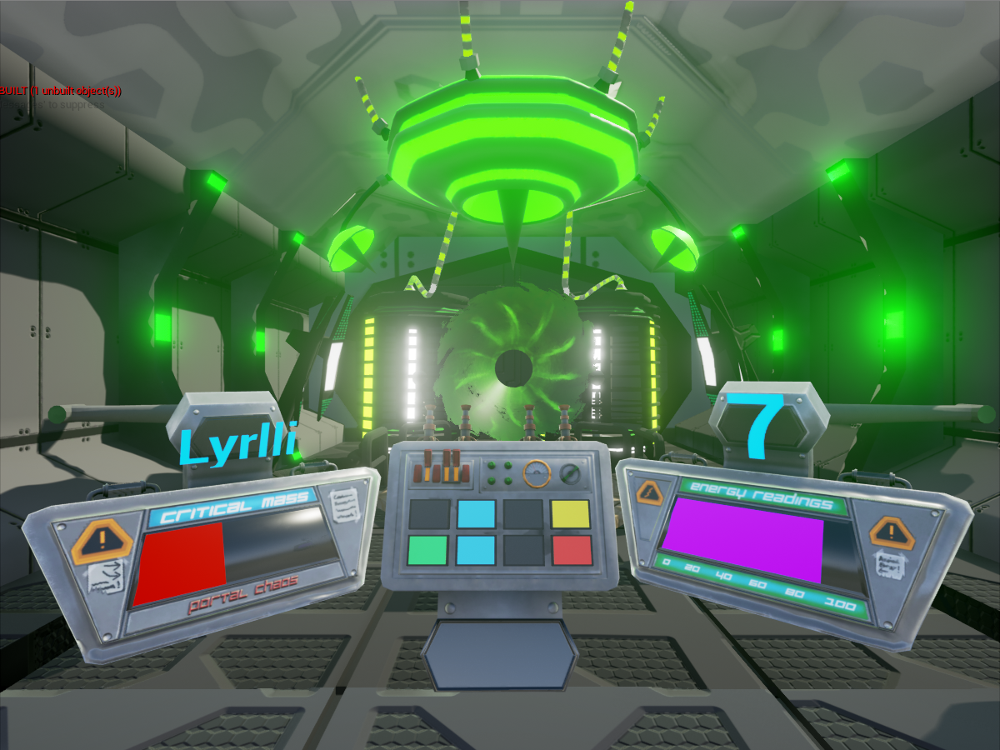

Portal Chaos - June 2016 Developed in: Unreal 4.11 Development time: 3 months (WIP) Team size: 3 Role: Programmer and Designer Portal Chaos is a game designed for 2 players to work in conjuction with one another to solve logic puzzles on the scientific equipment in front of them. Only once the correct solutions have been found based on the game's instructional documentation will the portal be stable enough to rescue your fellow scientist on trapped on the other side.
